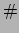

Next: Lights
Up: Scene Description Files
Previous: Including Files
Contents
Index
Scene File Comments
The  keyword is used anywhere after the camera description, and
will cause Tachyon to ignore all characters from the to the end
of the input line. The character must be surrounded by whitespace
in order to be recognized. A sequence such as will not be
recognized as a comment.
johns@megapixel.com